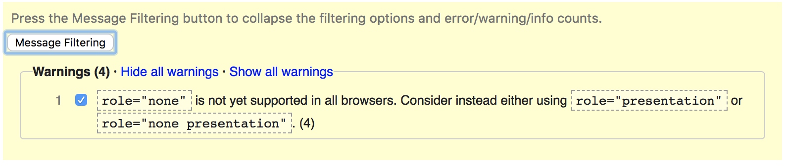
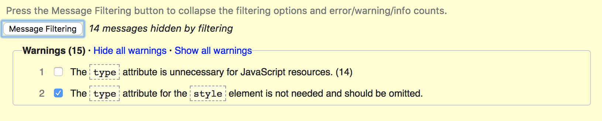

WEB STANDARDS
use the arrow keys to navigate; press space for slide overviewWeb standards
Web standards
Web standards
- A web standard describes within a certain field:
- syntax rules
- best practices
- technical specifications for rendering engines (e.g. browsers)
- Most important organizations for the web:
- Preparative work may be done by specialized working groups
- WHATWG (HTML5)
- Web RTC working group
- ...
Status of a standard (1)
- Under development: under construction (CSS3)
- Working draft: published for review by "the community"; major changes expected (HTML5,
XHTML2) -
Candidate recommendation: feedback from implementors; minor changes possible, usually for practical reasons (CSS2.1 until 2011)
→ nerdspeak for 'done and dusted' - Proposed recommendation: document is submitted to W3C council for final approvement
- W3C Recommendation: accepted by the W3C for wide deployment (XHTML1.1, CSS2.1...)
Parties involved
-
Parties involved in a standard:
- W3C → draft and publish the standards (actually not very important factor)
- browser vendors → implement standards and experiment with new features
- visitors → choose device and browser (adoptation rate)
- website owner → target audience and graceful degradation expectations
- open source community → available code snippets, frameworks...
- you → skills, favorites...
Feature support
- Some features of a standard are supported better than others
-
General idea of browser support:
- HTML5test (compatibility test)
- html5readiness.com (nice visualization)
- CSS3test (compatibility test)
- Detailed compatibility info:
- Browser usage statistics:
Graceful degradation (1)
- do websites need to look exactly the same in every browser?
- Example for CSS3 animations:
-
supported in Chrome19
unsupported but still acceptable in IE9
Graceful degradation (2)
- Example for CSS3 rounded corners and box shadow:
-


the unsupported version on the right is still acceptable -
This is called graceful degradation
- code for the best browser first
- provide acceptable fallback for lesser browsers
- 'top-down' approach
[Timeline]
| year | html | css | javascript | |
|---|---|---|---|---|
| 1991 | HTML1 | Defines 18 HTML elements (13 remain today) | ||
| 1992 | ||||
| 1993 | ||||
| 1994 | HTML2 |
New elements like <h1>, <br>… NN1 appears |
||
| 1995 |
HTML3 was too ambitious and never made it IE1 appears Browsor specific HTML extensions |
|||
| 1996 | CSS1 | JS 1.0 | Javascript introduced in NN2 | |
| 1997 | HTML3.2 | JS 1.2 |
First HTML version developed by the W3C; math formulas dropped, most of NN's additions adopted IE4 vs NN4 — browser war at its peak |
|
| 1998 | HTML4 | CSS2 | JS 1.3 | Three HTML variations: Transitional, Frameset and Strict. |
| 1999 | JS 1.4 | IE5 released; NN starts sinking | ||
| 2000 |
XHTML1 (S, F, T) |
JS 1.5 | XHTML = reformulation of HTML in XML syntax | |
| 2001 | XHTML1.1 |
XHTML1.1 is based on XHTML1.0 Strict IE reaches nearly 100% marketshare IE6 released with Windows XP |
||
| 2002 | ||||
| 2003 | IE4- and NN4- disappeared - tableless web layout is now possible | |||
| 2004 |
Firefox 1.0 released Rebellion in XHTML2 workgroup; parallel HTML5 workgroup formed |
|||
| 2005 | CSS2.1 | JS 1.6 | CSS2.1 ≈ snapshot of browser CSS2 support | |
| 2006 | JS 1.7 | IE7 released | ||
| 2007 | ||||
| 2008 | JS 1.8 | |||
| 2009 |
|
IE8 released W3C gives up on XHTML2 and embraces HTML5 |
||
| 2010 | ||||
| 2011 | IE9 released; marketshare below 60% | |||
| 2015 | Edge released; written from the ground up | |||
| today | HTML5 | CSS3 | new browser versions every 1 (Chrome) to 6 (Edge) months | |
| future | CSS4 | JS Harmony |
SYNTAX
Importance
Are standards important?
Nice Standards, but...
How is the web doing? (1)
Nice Standards, but...
How is the web doing? (2)
Nice Standards, but...
How is the web doing? (3)
Nice Standards, but...
How is the web doing? (4)
- but: https://developer.microsoft.com/en-us/microsoft-edge/
- 
- → no significant errors
- → they can if they want
Nice Standards, but...
How is the web doing? (5)
- but: https://www.act-academie.be
- 
- → no significant errors
Why should I care?

Reason 1: target media
-
A well-coded site will be viewable on
- all common browsers on all common platforms
- browsers with limited possibilities
- aural and braille browsers
- internet, your smartphone, tablet
- browsers in Russia, China, anywhere
- ...
- → accessibility
- → why?


Reason 2: target audience
-
A well-coded site will be suited for
- the business man
- the bakery, the butcher, the hairdresser
- grandma
- Too Much Coffee Man
- everyone, basically...
- ...
- → usability
- → why?
Reason N: ...
-
Other reasons:
- bad code is bad for your Google ranking
- bad code is hard to maintain
- bad code is ugly to look at
- team members who follow their own weird rules
instead of standards are a PITA - ...
- remember:
In this course
- We will use HTML5 + CSS3
-
You may use experimental CSS3 and HTML5 techniques, but:
- make sure it is non-critical
- or: provide Javascript backup
- or: provide acceptable graceful degradation
- if it is vendor specific: use vendor prefixes
- do not make 'webkit only' sites
- → test your site on all common browsers and systems!
Resource quality
-
Majority of online tutorials, forums and blogs about HTML, CSS or any other programming technique:
- obsolete techniques
- unefficient algorithms
- bad code quality
- full of errors
-
We'll use a whitelist of trustable resources,
see this slide